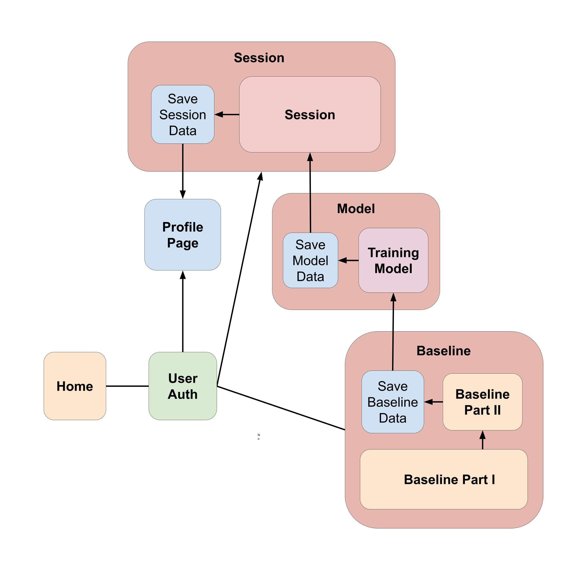

Koalacademy
We are developing Koalacademy, the first language learning platform to use brain waves as an input! The goal is to provide real-time feedback to users on whether they are expected to remember or forget a given translation based on EEG activity recorded during their study.
Facilitate Mandarin acquisition for English speakers, given the difficulty of learning the language.
Host our application on a remote web server, allowing open access to any users with the requisite hardware.
Demonstrate the power of commercial BCIs in allowing everyday users to develop practical life skills in an efficient and engaging manner.

Our project is based on the subsequent memory effect (SME), or the difference in brain activity while an individual studies an item they will later remember versus an item they will later forget. We plan to leverage the power of deep learning models to tap into the intricacies of the SME in EEG data, and deploy these models to make real-time predictions on whether users will learn the translations studied in the app.
Collaborating with Dr. Jacqueline Cummine, a Tier 2 Canada Research Chair in Neuroscience and Literacy, and Dr. Kuo-Chan Sun, a subject matter expert on Chinese language, we’re running a research study at the University of Alberta this academic year to confirm that our methods can make accurate predictions on subsequent learning based on brain activity. The structure of this study will be as follows:
We will be running an initial study to confirm that data gathered using our hardware setup can demonstrate well-established effects seen across the cognitive neuroscience literature. This will involve running an oddball task, where a distinct waveform known as the P300 should appear in EEG data when participants see an out-of-place stimulus on-screen.
In this task, we’ll have participants study different English-Mandarin translations while their brain activity is recorded by an EEG. Then, we’ll develop machine learning models that can learn what subsequently remembered/forgotten translations “look like” based on brain activity.
Finally, we’ll deploy the models created in the Baseline Task to make predictions in real-time while other participants study English-Mandarin translations. Then, we’ll evaluate whether the predictions made by these models are informative - i.e., if re-studying words flagged by the model as “unlearned” helps participant accuracy.
In addition to offering feedback at the end of a given learning session (English to Mandarin association, and vice versa), we will offer users stats on their learning across multiple sessions via a profile dashboard as they progress in their learning, which in this case will be increasingly complex Mandarin characters. Users can get a sense of their progress at a glance and will be provided a summary of the characters that they need to study more.

Core Developers

|

|

|

|

|

|

|

|

|
|---|---|---|---|---|---|---|---|---|
| Eden Redman | Harrison Fah | Matthew Danyluk | Dania Villarreal | William Chen | Khaled Al-Amoodi | Julie Pilz | Shelly Xue | Tanyaradzwa Gozhora |
| Team Lead - BA, Fine Arts and Design | Client Analytics Team Lead - BSc, Computer Science | Server Analytics Team Lead - BSc, Neuroscience | Front End Team Lead - BSc, Neuroscience | Game Development Team Lead - BSc, Computer Science | Client Analytics Developer - PhD, Computer Engineering | Front End Developer - Bsc, Computer Science & Psychology | Front End Developer - BSc, Computer Science | Front End Developer - BSc, Computer Science |
| Eden is responsible for managing workflow within and across project sub-teams, talent recruitment and on-boarding, ensuring project milestones are met, and establishing the program architecture. In short, he ensures the team is collaborating effectively and leads or assists with various hands-on aspects of the project. | Harrison has worked on setting up the connection between the openBCI headset and chrome as well as parsing/converting the incoming data. He also worked on integrating the openBCI with react in the form of a baseline task/game and communicating with the cloud database. | Matthew focuses on server-side analytics, which includes training a machine learning model based on activity in the baseline task to make predictions on learning outcomes during the real game. He will also help guide experimental design to evaluate how effective our procedure is. | Dania’s work focused on the front end aspects of the project, including setting up some pages and their layout; as well as providing some of the artwork to the website’s design. She is currently the representative for the front end team and helps ensure that tasks for front end development are designated properly and carried out. | William works on the Unity game and its inner workings. He implements functions such as connecting the game to React, receiving questionnaires and timings for the Unity front end and providing real time feedback for React. | While Khaled is mainly a front-end developer (designing and creating responsive features and pages), he also works on other aspects of Koalacademy. Other tasks he handles include data analysis and game development. | Julie works on the Game team. She is helping the team with the Unity side of the project, as well as providing art assets. | Shelly’s works focused on front-end development. She develops fluid layouts to ensure the website is usable across device types with varying screen dimensions. She also works on fetching data from databases and displaying it on web pages. | Tanya works on the frontend of the project. In particular, he constructs components that make the site more intuitive to use. He also makes sure that pages remain responsive across different screen sizes and general bug fixes. |
Faculty

|
||
|---|---|---|
| Jacqueline Cummine | Kuo-Chan Sun | Kelvin Jones |
| Associate Professor | Teaching Professor | Associate Professor and Neurophysiologist |
| Jacqueline is an Associate Professor who provides guidance, mentorship and support with respect to experimental design, space and equipment needs. | Kuo-Chan is a Teaching Professor who provides support with respect to the Mandarin and the psycholinguistic aspects of Study II. | Kelvin is a professor in the Faculty of Kinesiology, Sport, and Recreation as well as a Neurophysiologist for Alberta Health Services. He offers support in the way of electroencephalography consultation. |